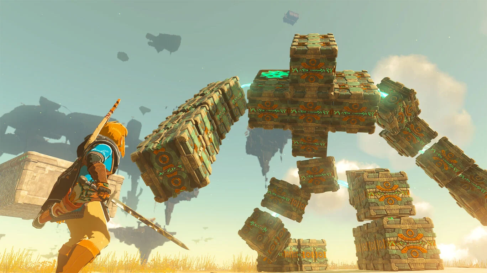

ゲームタイトル:ゼルダの伝説 ティアーズ オブ ザ キングダム
コメント
『ゼルダの伝説』シリーズの最新作で、2023年にswitchで発売された。
空や地上に地下の広大なマップ上を自由に探索したり、色んな謎を解いていくのが魅力。
戦闘面は、相手の攻撃を避けれたり、タイミングよくガードすることで相手の攻撃をはじいたり等、戦っていてかなり楽しい。
謎解きも程よく難しくて、自分の発想次第でクリアできるのですぐに時間が溶けてしまうほど。
文句なしの神ゲーだった。